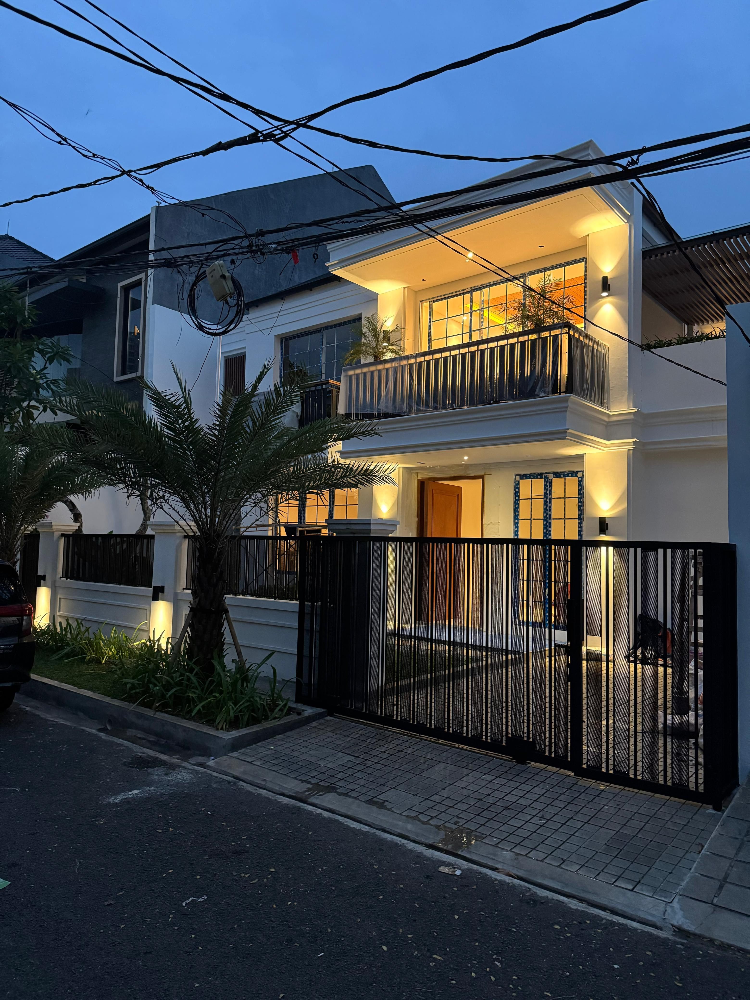
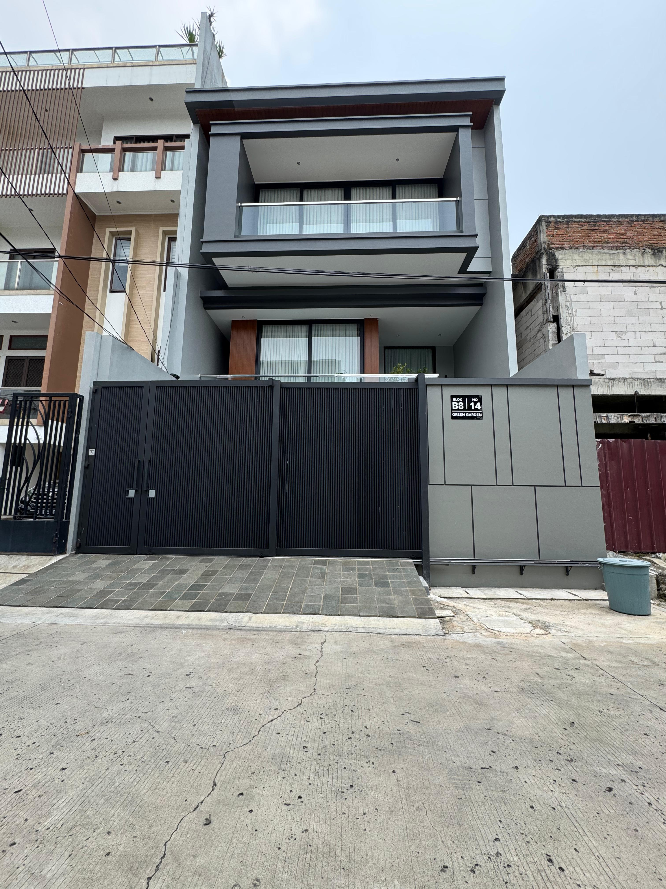
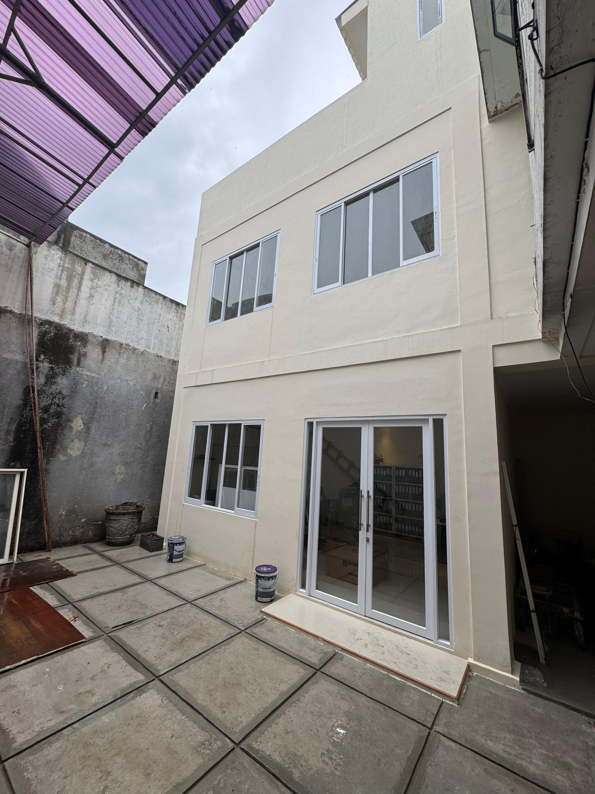

Residential
Pondok Indah 2 - Mr. E Project

Before

After
Transformasi hunian eksklusif di Pondok Indah dengan penekanan pada konsep modern klasik yang memaksimalkan sirkulasi udara dan cahaya alami.
Renovation
Griya Dadap - Mr. A Project

Before

After
Renovasi fasad dan interior untuk menciptakan kesan rumah yang lebih luas, bersih, dan fungsional bagi keluarga muda.
Interior Design
Green Garden - Mr. R Project

Before

After
Pengerjaan interior kustom untuk area ruang tamu dan dapur dengan gaya industrial minimalist.
Commercial
PT. Sumber Pralin Utama Office Project

Before

After
Perencanaan dan pengembangan area operasional kantor untuk meningkatkan produktivitas dan kenyamanan kerja karyawan.